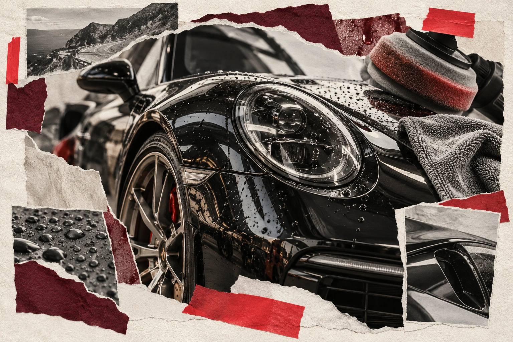

FORMA
↗
Сайт детейлинг-студии
Онлайн-запись и личный кабинет: автомобили клиента, заявки и история обслуживания. Настроил регистрацию и доступ к данным своего аккаунта.
- Задача
- Запись на услуги и данные автомобиля.
- Что сделано
- Интерфейс, заявки и личный кабинет.
- Формат
- Личный проект.